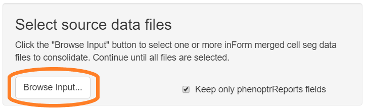

Consolidating inForm data
Kent Johnson
2022-01-03
Source:vignettes/consolidation.Rmd
consolidation.RmdData consolidation overview
The first step in a phenoptrReports data analysis is data consolidation.
The consolidation step combines the output from multiple inForm projects into a single consolidated data file and creates columns for each individual phenotype. The inputs to this step are merged cell seg data files from multiple inForm projects. The output is a consolidated data file and a summary report for each file.
NOTE: The consolidation step will fail if the Slide IDs and Cell IDs in the merge files do not exactly agree. This can happen, for example, if
- the projects use different cell segmentation parameters
- different fields were included in the merge step
- a region of interest or disinterest was drawn in the merge step
Run the consolidation step even if your data comes from a single inForm project. This creates a data file in the format that the analysis step uses.
Data requirements
Merged cell seg data
The primary source data for phenoptrReports is one or more merged cell seg data files created in the inForm Review/Merge tab. You may use multiple merge files from multiple inForm projects with different phenotypes. The Slide ID and Cell ID fields in multiple merge files must agree exactly.
Detailed steps
Choose “Consolidate and summarize” from the RStudio Addins menu
Thus will open the consolidation app.

Select source files
Click the “Browse Input” button in the “Select source data files” section of the GUI. Use the file selection dialog to select your inForm merge data files. If the files are in multiple directories, click the Browse button multiple times to select them.

Select “Keep only phenoptrReports fields” to reduce the size of the consolidated data file by omitting rarely used fields such as Min and Max expression and cell Compactness.
Select output directory
Click the “Browse Output” button in the “Select output directory” section of the GUI. Use the directory selection dialog to create a new directory to contain the output files.

Process files
Click the “Process Files” button to start processing of the selected files.

A small progress meter will open to show progress. Any errors will be shown in the RStudio Console pane.

View summary reports
When processing completes, the output directory will contain several files:
-
Consolidated_data.txt- A data file containing the consolidated results -
Consolidated_data.html- A report containing summary information about the consolidated data - Summary reports for each merge file that contributed to the result
The consolidated data file is used for the actual analysis. The summary reports contain an overview of the data, including
- number of fields per slide
- number of cells of each phenotype per slide
- visualizations of the combination phenotypes present in the data
Next: Analysis
Continue to the next tutorial to learn how to complete your analysis.